|
|
|
| Equipment::
and 8x16 board, 28 black pieces, 29 white pieces with numbers as shown,
arranged as shown. The pieces are either rounds, triangles, or squares, except that each player has one stack of pieces which is called a pyramid. White rounds are 2,4,4,6,8,16,36, 64 White triangles are 6,9,20,25,42,49,72,81 White squares are 15,25,45,81,169,153,289 The White pyramid contains 1 and 4 round, 9 and 16 triangle, 25 and 36 square. Black rounds are 3,5,7,9,9,25,29,81 Black triangles are 12,16,30,36,56,64,90,100 Black squares are 28,49,66,120,121,225,361 The Black pyramid contains 1 round, 25 and 36 triangle, 49 and 64 square. |
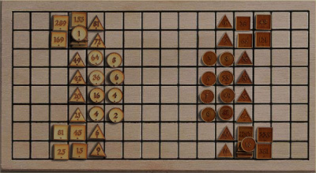 |
| 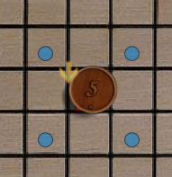 Rounds move one step diagonally |
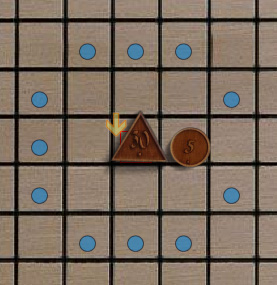 Triangles move 2 steps horizontally, or a knight's move |
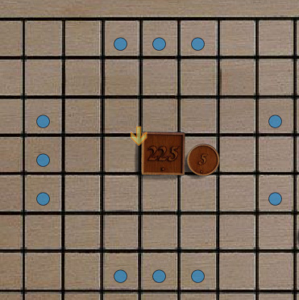 Squares move 3 steps horizontally or vertically, or a longer knights move |
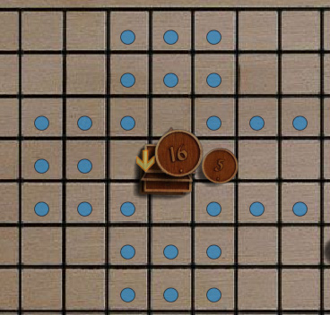 Pyramids move in any of the ways permitted by any of the pieces they still contain. |
|
|
Capture by Siege
A piece is captured by siege if it is surrounded by enemies or the edge
of the board on all 4 orthogonal or all four diagonal directions. |
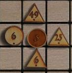 Four whites surround a black piece. |
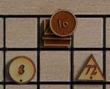 Two whites capture the entire black pyramid using the edge of the board |
|
Capture by Equality
A piece or stack is captured by equality if the attacking piece (or
stack) has the same value, and if the attacking piece could move to the
position of the attacked piece if it were vacant. Note that
very few of the black and white pieces have the same value. |
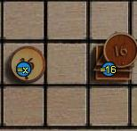 Black 16 captures white 16 by
equality (it can move there by one of its triangles).
|
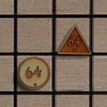 White 64 captures black 64 by
equality.
The reverse is not the case; black 64 can't move to white 64's location. |
|
Capture by Eruption
A piece or stack is captured by eruption if the value of the smaller,
multiplied by the distance between the pieces, is equal to the value of
the greater. Captures by eruption do no depend on the natural
movement of the pieces. The starting and ending locations are
both counted, so the minimum distance between pieces is 2. |
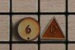 6 or 12 would capture by eruption, depending on whose move it is. |
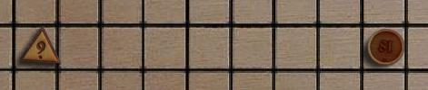 9 or 81 would capture by eruption, depending on whose turn it is. |
|
Capture by Ambush
A piece is captured by ambush if two pieces, which could move to the
enemy to be captured, have a sum, difference, product, or quotient
equal to the captured piece value. |
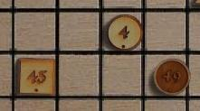 White 45 and 4 capture black 49 (49 = 45+4) |
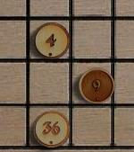 White 4 and 36 capture black 9 ( 9 = 36/4) |
Glorious victories are an
arrangement of 3 pieces which meet several conditions
This
page has a table of all solutions. |
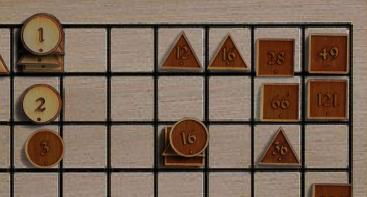 White wins by forming an arithmetic progression on Black's side of the board. (2-1) = (3-2) |
| 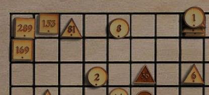 Black wins by forming a geometric progression on White's side of the board. (1*36) = (6*6) |
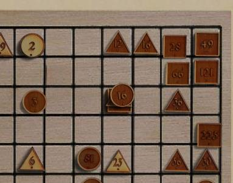 White wins by forming a harmonic progression on Black's side of the board. (2+6)*3 = ((2*6)*2) |
| E-Mail: | Go to BoardSpace.net home page |